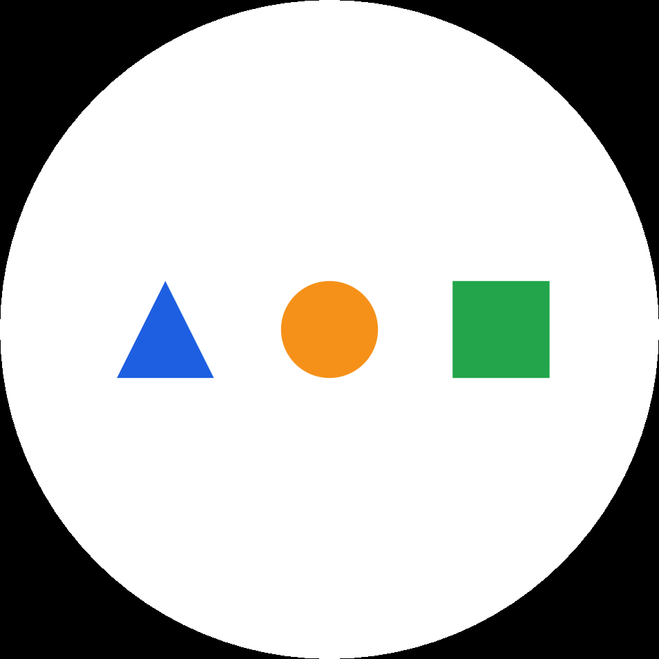
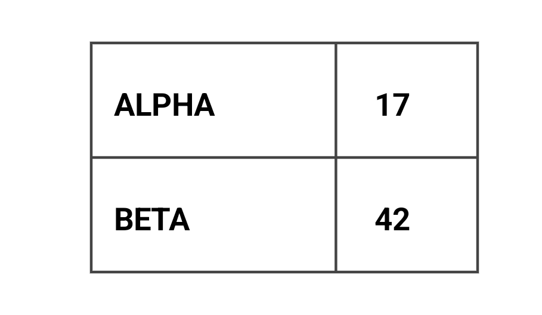
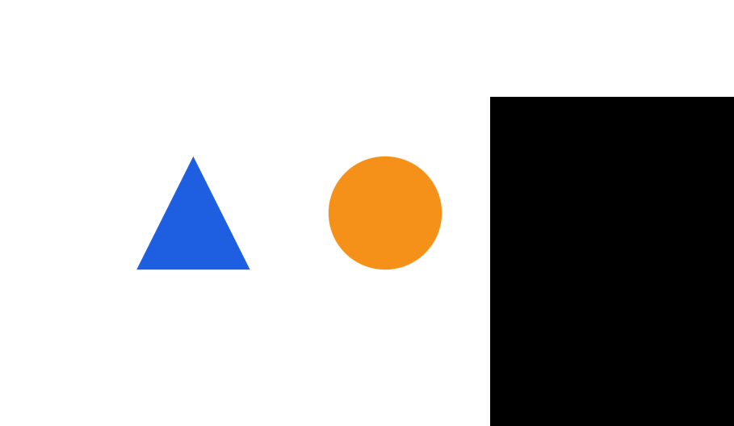

不必先想好怎么问
圈出一块画面，让位置与内容成为问题的上下文。
A LITTLE DOT. A CLEARER NEXT STEP.
界面太多，说明太长？让一颗小水晶球陪你看。
圈出屏幕上的疑问，得到解释；再把操作拆成眼前这一步。
让数字生活，少一点「我不会」。
面向看不懂界面、记不住步骤、难以描述问题的日常时刻。01 / TRY THE INTERACTION
用鼠标或手指画一个范围，体验「圈选 → 提问 → 分步引导」。
也可以点选目标，完成同样的体验。
从容一点，慢慢来
选择一项服务，看看下一步
按住拖动圈选 · 也支持下方按钮与键盘操作
点选目标，也能播放圈选轨迹：
已选择：预约办事
示意中的预约不会提交任何资料，也不会产生真实预约。
DESIGNED FOR THE MOMENT OF HESITATION
圈出一块画面，让位置与内容成为问题的上下文。
浮层高亮当前目标，解释保留在对话中，可以回看、重复。
用户确认再继续；需要时停止。网页体验和 Android 原型都围绕清晰反馈设计。
02 / REAL ANDROID EVIDENCE
下面是实际 Android 开发版的连续录像。
画圈、不同轨迹、区域问答，都能直接看见。
公开测试画面中的圈选与真实模型区域问答。4 个问题核心任务通过；其中 2 个完整回答仍有额外几何描述错误。此段 Care 仅使用节点规划，未传图、已验证步骤为 0；随后切换到 Screen 图像问答。两条链路分别验收，尚未证明真实模型关怀任务的完整闭环。
录像来自较早开发版，并非 1.1.0 签名包的新一轮设备验收。
阅读验收范围与记录 ↗


03 / DEVICE + CLOUD
复用 nanoMuse 的多设备与模型接入设计，
围绕 Nanodot 的 Android 交互逐步验证。
用户授权屏幕捕获，圈选、预览与遮罩在设备端形成交互。
图像问答需支持图片的模型；请求会发送所选区域及相关对话上下文。
在浮层中继续对话。Care 规划、目标提示与用户确认是另一条独立验收链路。
继承 nanoMuse 的设计：手机负责入口与屏幕交互；PC 可运行 DSH 智能体、Hands 工具，以及 Ollama / LM Studio / vLLM 等本地模型；可选云模型与 Hub 传递任务、确认和结果。相关源码已保留，PC 与云端整链路仍待配置、联调与验收，不宣称已完成 AI PC / NPU 适配。
项目主页、本地交互示意和真实过程录像。网页示意无需 GPU，不代替 Android 客户端，也不假装已连接云端推理服务。
在 GitHub 获取源码，复现构建与验收，提交问题或贡献改进；模型与同步服务按原项目文档独立配置；上游 nanoMuse Cloud 仍是上游服务。
NANODOT 1.1.0 · CRYSTAL PREVIEW
Android 8.0+ · ARM64 · 开源预览版
完整真实模型关怀闭环、实体设备与旧版本 Android、中文语音仍需进一步验收。实际操作前请阅读发布说明。